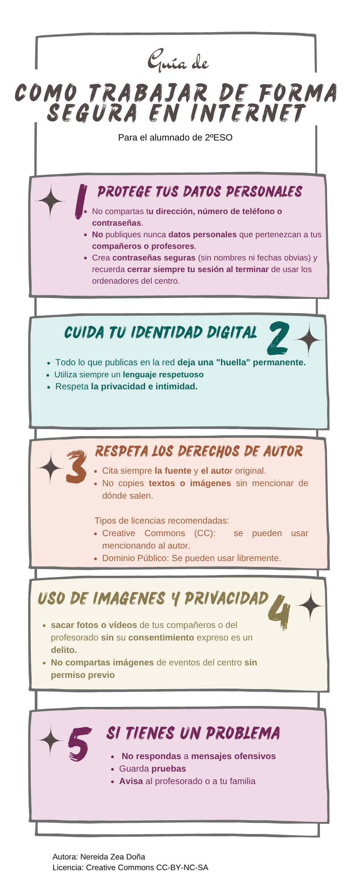

Digital Footprint👣
Antes de empezar, no nos podemos olvidar de dar las correspondientes pautas y consejos de protección en la red. Como cronistas del siglo XXI, vuestra reputación digital es tan importante como vuestra posición en la sociedad de la Regencia. Para ayudaros, aquí tenéis la Guía de cómo trabajar de forma segura en internet.
